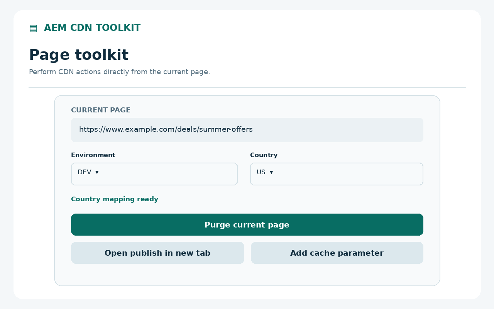
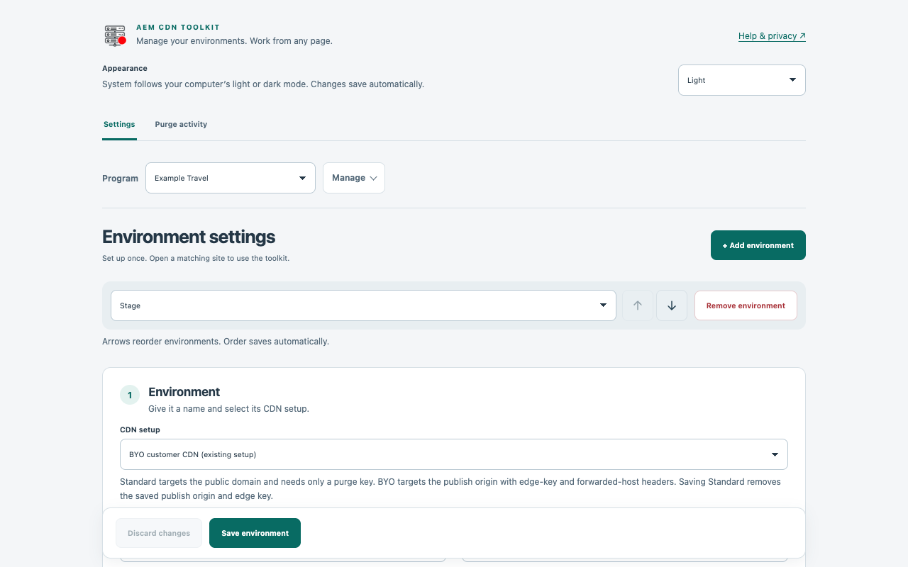
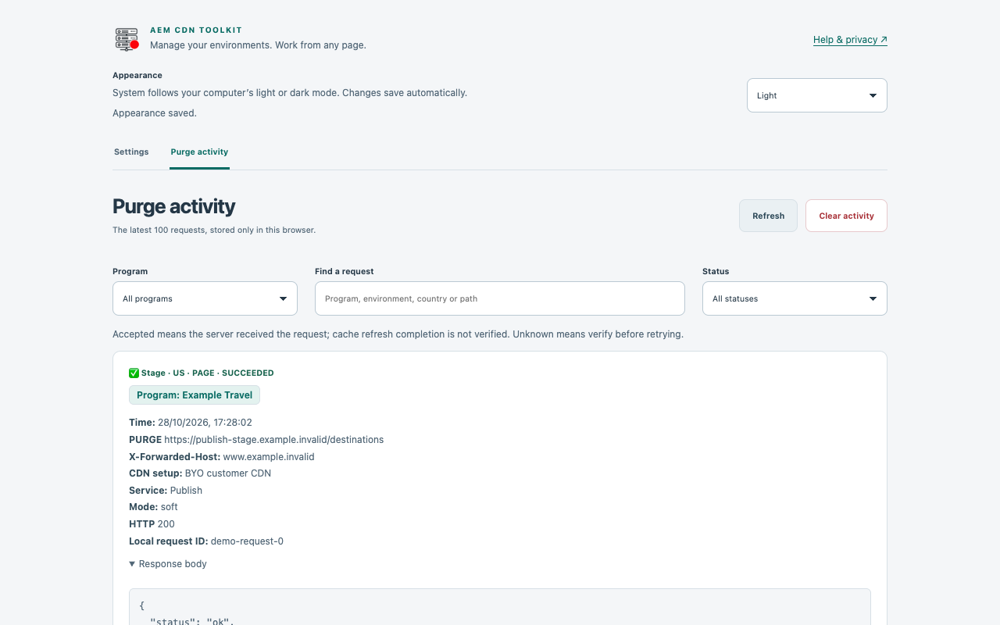

Standard or BYO.
Use Cloud Manager domains directly with Standard Adobe CDN, or keep authenticated ingress access with BYO customer CDN. Standard needs a purge key without edge-key or forwarded-host headers.
FOR THE PEOPLE BEHIND THE PAGE
From public page to AEM publish. From stale cache to a purge request. Keep every program’s AEM actions right in Chrome.

Your programsIndependent environments, keys and controls.
Your browserLocal settings. No developer account.
Your servicesRequests go directly to configured AEM hosts.
NEW IN VERSION 2.8.0
Choose your CDN setup, route each mapping to the right service, and inspect the response to every purge.
Use Cloud Manager domains directly with Standard Adobe CDN, or keep authenticated ingress access with BYO customer CDN. Standard needs a purge key without edge-key or forwarded-host headers.
BYO domain mappings select Publish or Preview. Configure a preview origin and separate keys, or explicitly reuse publish keys. Navigation and purge follow the selected service.
Expand a purge response directly in activity. JSON is formatted, known keys and credential fields are redacted, and previews are size-limited. Program and service labels keep requests identifiable.
Existing environments remain BYO and existing mappings remain Publish. Program controls sit above environments in Settings and at the top-right of the popup. Incognito activity stays unsaved.
THREE PARTS. ONE WORKFLOW.
Keep the environment, the page and the outcome connected.
With BYO CDN, open authenticated publish in a new tab or window. In either setup, send a soft or hard page purge, or add a random cache parameter.
A green toolbar dot identifies configured domains. The popup detects the program, environment and country across all saved programs, with an explicit choice when multiple mappings match.
Understand purge results ↗
Create programs with independent, named environments. Map public sites and path prefixes to a publish origin, with credentials and preferences set per environment.
Choose page and full-purge confirmations independently. Full purge starts disabled for new environments. Export without keys by default.
Configure your first environment ↗
Review the latest 100 requests in your browser. Search by program, environment, country or path, filter by program and status, and inspect response details and request IDs.
Program badges identify each request. Activity distinguishes succeeded, accepted, failed and unknown outcomes. New records omit URL query strings and fragments.
Find help when you need it ↗
A SMALL TOOL. A CLEAR BOUNDARY.
No analytics, telemetry or developer backend. Configuration and activity stay in your Chrome profile. Your keys are sent only to your configured services when required for publish access or purge.
Host permissions are requested for configured HTTPS hosts. Publish headers are scoped to the created tab and exact publish origin. Saved keys are plaintext in extension storage, not an encrypted vault.
Read the privacy policy ↗START WITH ONE ENVIRONMENT
You need Chrome 120+, an AEM as a Cloud Service publish environment and a purge key. BYO CDN also needs an edge key. The toolkit does not provision services or issue credentials.
Clone or download the
GitHub repository. Extract it, open chrome://extensions, enable
Developer mode, then choose
Load unpacked and select the folder containing
manifest.json.
Pin the extension. Open its popup, choose Settings. Use the Default program or choose Add program, then Add environment. Enter a unique name, HTTPS publish origin, public country URLs and any publish path prefixes.
Select Standard Adobe CDN or BYO customer CDN. Add a purge key for purge actions; BYO also needs an edge key. Choose tab or window opening, purge mode and confirmations. Select Save environment and grant access to the configured hosts.
Visit a configured public site and open the popup. Select the program, environment and country if needed. Validate publish access and page purge in a test environment before using production.
KNOW WHAT THE RESPONSE MEANS
status: ok.
Full purge affects all cached resources and countries for the selected AEM publish service. The toolkit does not invalidate Dispatcher cache or a separate customer CDN. A random cache parameter changes the page URL; its effect depends on your CDN configuration.
Open chrome://extensions, select
Details for AEM CDN Toolkit, then enable
Allow in Incognito. Saved environments and keys are
shared with regular browsing. Publish opens in the same browsing mode
as the source page.
Incognito purge outcomes appear in the popup and are not saved to activity history. Settings and saved activity open in a regular window. Publish tab context stays in session memory until the tab closes.
KEEP MOVING
Configure an optional Preview URL and separate preview keys in Settings, or explicitly choose to reuse publish keys. Set each domain mapping's Service to Publish or Preview. The popup detects the service from that mapping and opens or purges the matching ingress. Preview full purge affects Preview only; activity and confirmations identify the service. Existing mappings remain Publish.
Choose Standard Adobe CDN when public domains are mapped directly in Cloud Manager. Purge requests target the public domain with a purge key; no edge key or forwarded-host header is sent, and there is no publish button. Choose BYO customer CDN for the existing publish-ingress flow with edge-key and forwarded-host headers. Existing settings remain BYO. Full purge affects the entire AEM service in both modes.
Each program has its own environments and credentials. Settings remembers your selection, while the popup independently checks all programs for the current URL. If several programs match, select one before acting. Duplicated programs never copy saved keys.
Choose System, Light or Dark under Appearance in Settings. System is the default and follows your computer. In Purge activity, select a Program and Status or search by program, environment, country or path. Each request shows a program badge.
Import, export and reset are at the bottom of Settings. Exports omit keys by default; select “Include saved keys” only for a private backup. Import replaces all programs. Reset clears programs, environments, keys and active publish headers but retains activity. Activity has its own clear control.
Reload the extension in Chrome's extension manager, then close and reopen Settings and the popup. Reopen publish through the extension after credential or mapping changes. The publish button shows whether the saved setting opens a tab or a window.
It identifies a configured domain, not valid credentials or working CDN connectivity. Page actions also require a valid country mapping. Check the selected environment and public path prefix if actions are unavailable.
Something else on your mind?
Report an issue or ask for help ↗Include the extension version and error text. Never post keys, private URLs or credential-bearing exports.